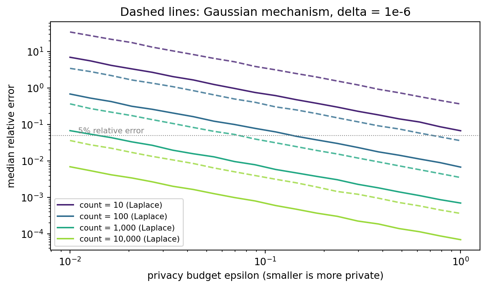
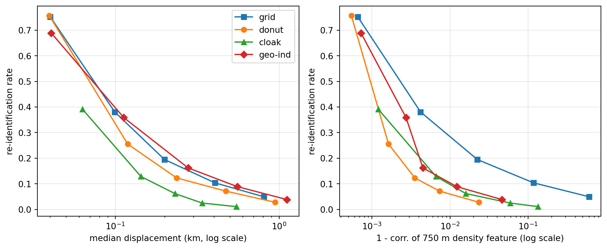

Protecting information is an old problem. Caesar shifted letters, wartime cipher machines scrambled radio traffic, and modern systems wrap data in AES. Encryption, however, answers a narrower question than the one most analysts face. Encryption keeps data away from people who should not see it. Anonymization asks how to let people use data, to test software against it, to train models on it, to publish statistics from it, without learning too much about any single person in it. That second question is much harder, because utility and privacy pull in opposite directions. Every bit of information that makes a record useful for analysis is also a bit that can help someone recognize it.
This chapter works through the toolbox in roughly the order a data team meets it. We start with masking, tokenization, and pseudonymization, which hide direct identifiers such as names and account numbers. We then show why hiding direct identifiers is not enough, measure re-identification risk from quasi-identifiers, and build the syntactic defenses of \(k\)-anonymity, \(\ell\)-diversity, and \(t\)-closeness. Next comes differential privacy, the one framework whose guarantee survives an adversary with arbitrary side information, with the Laplace and Gaussian mechanisms implemented from scratch. The final part turns to location data, which is both unusually identifying and unusually valuable, and compares grid aggregation, jittering, spatial cloaking, and geo-indistinguishability on a common privacy and utility scale.
The governance and regulatory side of the same topic, including consent, minimization, and the GDPR, is covered in the Data Ethics and Governance chapter. The generative alternative, releasing a synthetic dataset in place of the real one, is covered in the Synthetic Data Generation chapter. This chapter is the technical layer that sits between them.
83.1 A Vocabulary for De-identification
It helps to separate the attributes of a record by the role they play in an attack.
Direct identifiers single out a person on their own: name, email address, Social Security number, phone number, account number.
Quasi-identifiers are not unique on their own but become identifying in combination: ZIP code, date of birth, sex, occupation, a home location, a sequence of purchase timestamps.
Sensitive attributes are the values the data subject would not want linked to them: a diagnosis, an income, a credit default, a location visited at night.
Non-sensitive attributes are everything else, although the boundary moves with context.
Masking techniques act mostly on direct identifiers. Generalization, suppression, and noise act on quasi-identifiers and sensitive attributes. A release is only as private as its weakest column, so a sound pipeline treats every column according to its role rather than applying one technique everywhere.
The legal vocabulary matters too. Under the GDPR, pseudonymized data, where identifiers have been replaced but the controller can re-link them with additional information held separately, is still personal data (reference 18, Article 4(5)). Only data that can no longer be attributed to a person by any means reasonably likely to be used counts as anonymous and falls outside the regulation. Most of the techniques in the first half of this chapter produce pseudonymized data, not anonymous data, and treating the two as equivalent is the single most common compliance error in analytics teams.
83.2 Masking, Tokenization, and Pseudonymization
83.2.1 A taxonomy of masking
Masking techniques differ along three axes.
When masking happens.Static masking writes a masked copy of a database, typically for development and testing. Dynamic masking rewrites query results at read time according to the caller’s role, so the production table is untouched. On the fly masking transforms data as it moves through an extraction pipeline.
Whether it can be reversed.Tokenization and encryption can be undone by whoever holds the vault or the key. Hashing with a secret key, shuffling, generalization, and noise addition are designed to be one way.
What it preserves.Format-preserving methods keep the shape of a value (sixteen digits stay sixteen digits) so downstream validation code still works. Deterministic methods map equal inputs to equal outputs, which preserves joins across tables. Distribution-preserving methods such as shuffling keep column marginals but break row-level links.
Technique
Reversible
Preserves joins
Preserves format
Typical use
Redaction or partial masking
No
No
Partly
Display in call-center screens
Tokenization with a vault
Yes, with vault
Yes
Yes
Payment cards under PCI DSS
Keyed hashing (HMAC)
No, without key
Yes
No
Pseudonymous analytics IDs
Format-preserving encryption
Yes, with key
Yes
Yes
Legacy systems that validate formats
Shuffling or swapping
No
No
Yes
Test data, statistical disclosure control
Generalization and suppression
No
Partly
Partly
Public microdata releases
Noise addition (differential privacy)
No
No
No
Published statistics, model training
Format-preserving encryption deserves a note because informal tutorials often illustrate it with reversing a string. That is an encoding, not encryption, and anyone can undo it. Real format-preserving encryption uses a keyed block cipher over an arbitrary domain, such as the Feistel-based FF1 mode standardized by NIST, and its security definitions were formalized by Bellare, Ristenpart, Rogaway, and Stegers (reference 13). Use a vetted library and never roll your own.
83.2.2 The dictionary attack on plain hashing
The most frequent mistake in pseudonymization is hashing an identifier with an unkeyed function such as SHA-256 and calling it anonymous. The flaw is that identifiers live in small, enumerable spaces. There are one billion nine-digit Social Security numbers, a few hundred million phone numbers per country, and only about forty thousand ZIP codes. An attacker who knows the hash function simply hashes every candidate and builds a lookup table.
Formally, if the identifier space \(\mathcal{I}\) has size \(|\mathcal{I}|\) and hashing costs \(c\) seconds, inverting every hash costs \(|\mathcal{I}|\,c\) seconds once, after which every record is re-linked. A secret key changes the attack completely. With a keyed hash \(h_K(x) = \mathrm{HMAC}_K(x)\), an attacker without \(K\) must guess the key, a space of \(2^{256}\), rather than the identifier. The key then becomes the asset to protect, and it must be stored apart from the pseudonymized data, which is exactly the separation the GDPR definition of pseudonymization requires.
The code below builds a small customer table, applies four masking techniques, and then mounts the dictionary attack on the unkeyed hash.
Code
import hashlibimport hmacimport secretsimport timeimport numpy as npimport pandas as pdrng = np.random.default_rng(1201)n_cust =8customers = pd.DataFrame({"name": [f"Customer {i}"for i inrange(n_cust)],"ssn": [f"{rng.integers(100, 900):03d}-{rng.integers(10, 99):02d}-"f"{rng.integers(1000, 9999):04d}"for _ inrange(n_cust)],"card": ["".join(str(d) for d in rng.integers(0, 10, 16)) for _ inrange(n_cust)],"zip": rng.choice(["65201", "65202", "65203"], n_cust),"pin": [f"{rng.integers(0, 10000):04d}"for _ inrange(n_cust)],})# 1. Partial masking: keep only the last four digits for display.customers["card_masked"] = customers["card"].str[-4:].radd("*"*12)# 2. Tokenization: random surrogate, mapping kept in a separate vault.vault = {}def tokenize(value):if value notin vault: vault[value] ="tok_"+ secrets.token_hex(6)return vault[value]customers["ssn_token"] = customers["ssn"].map(tokenize)# 3. Keyed pseudonym: HMAC-SHA256 with a secret key held elsewhere.KEY = secrets.token_bytes(32)def pseudonym(value, key=KEY):return hmac.new(key, value.encode(), hashlib.sha256).hexdigest()[:16]customers["ssn_pseudonym"] = customers["ssn"].map(pseudonym)# 4. Unkeyed hash of a 4-digit PIN: the classic mistake.customers["pin_sha256"] = customers["pin"].map(lambda p: hashlib.sha256(p.encode()).hexdigest()[:16])print(customers[["card_masked", "ssn_token", "ssn_pseudonym", "pin_sha256"]].head())print("Vault entries that must now be secured:", len(vault))
card_masked ssn_token ssn_pseudonym pin_sha256
0 ************2185 tok_87e63f07c6eb 7438942358f4875a 936f6af81f1f8fd9
1 ************5253 tok_d062a15778ca 66d6a5e833bf0845 27ed5b43a1c87bdf
2 ************1916 tok_c38735414856 12ada009a870aeec 5dbb51ba631f2c78
3 ************5824 tok_340ebbe73bb2 71bc97881bb5de99 3aaf7d14678d503f
4 ************3242 tok_3042c344b018 200e5389a7ca0396 f01b8659742bf113
Vault entries that must now be secured: 8
Code
# Dictionary attack: hash every possible PIN once, then invert by lookup.t0 = time.perf_counter()rainbow = {hashlib.sha256(f"{p:04d}".encode()).hexdigest()[:16]: f"{p:04d}"for p inrange(10_000)}recovered = customers["pin_sha256"].map(rainbow)elapsed = time.perf_counter() - t0print(f"Recovered {(recovered == customers['pin']).mean():.0%} of PINs "f"in {elapsed *1000:.1f} ms")# The same attack against the keyed pseudonym fails without the key.guess_key = secrets.token_bytes(32)table = {pseudonym(s, guess_key): s for s in customers["ssn"]}print("Keyed pseudonyms recovered with a wrong key:", customers["ssn_pseudonym"].isin(table).sum())
Recovered 100% of PINs in 31.0 ms
Keyed pseudonyms recovered with a wrong key: 0
Every PIN falls almost instantly, because the whole space fits in a dictionary that builds in milliseconds. The keyed pseudonym resists the same attack even when the attacker happens to know every true Social Security number in the table, because without the key the attacker cannot compute the mapping at all. The tokenization vault and the HMAC key are the crown jewels of these schemes. Losing either converts pseudonymized data back into identified data.
83.2.3 Shuffling and swapping
Shuffling permutes a column across rows. Marginal distributions survive exactly, which is why shuffled tables are popular for test environments. Every relationship between the shuffled column and the other columns is destroyed, however, which makes shuffled data useless for modeling those relationships. Data swapping, the statistical disclosure control variant, exchanges values only between a random fraction of record pairs that agree on some key variables, which preserves more of the joint structure at the cost of weaker protection (reference 14). Neither technique comes with a formal guarantee, and both leave rare values untouched in the sense that an unusual value still appears somewhere in the column.
83.3 Re-identification Risk from Quasi-identifiers
Removing names does not remove identity. Sweeney showed that the combination of five-digit ZIP code, full date of birth, and sex is unique for a large majority of the United States population, and used it to re-identify the medical record of a state governor in a supposedly anonymous hospital discharge dataset (reference 1). Narayanan and Shmatikov later re-identified Netflix subscribers from a handful of movie ratings and dates (reference 8). De Montjoye and colleagues found that four spatio-temporal points suffice to single out most individuals in a mobile phone dataset (reference 9), and Rocher, Hendrickx, and de Montjoye built a generative model that estimates, for any given person, the probability that a match in a sampled dataset is correct (reference 10).
The basic risk measures come from equivalence classes. Given a set of quasi-identifiers \(Q\), two records belong to the same class if they agree on every attribute in \(Q\). Write \(f_j\) for the size of the class containing record \(j\). Under the prosecutor model, where the attacker knows the target is in the dataset and knows the target’s quasi-identifiers, the probability of correctly re-identifying record \(j\) by picking uniformly within its class is \(1/f_j\). Three summaries are standard:
\(R_{\max}\) is the worst-case risk, \(\bar{R}\) is the expected fraction of records an attacker re-identifies when targeting everyone, and \(U\) is the sample uniqueness rate. The identity \(\bar{R} = \#\{\text{classes}\}/n\) follows because each class of size \(f\) contributes \(f \cdot (1/f) = 1\) to the sum.
We now build a synthetic patient registry with realistic quasi-identifiers and a sensitive diagnosis, and measure how uniqueness changes as more quasi-identifiers are released.
Code
rng = np.random.default_rng(1201)n =6000zip_codes = np.array([f"65{1+ (z >=12)}{z:02d}"for z inrange(40)])zip_weights = rng.dirichlet(np.full(40, 2.0))age = np.clip(rng.normal(45, 17, n), 18, 95).astype(int)birth_day = rng.integers(1, 366, n)sex = rng.choice(["F", "M"], n)zips = rng.choice(zip_codes, n, p=zip_weights)# Sensitive attribute. Prevalence depends on age so that some classes# end up homogeneous after generalization.diag_names = np.array(["none", "asthma", "diabetes", "depression", "cancer", "HIV"])logits = np.column_stack([ np.full(n, 2.2), np.full(n, 0.2), 0.04* (age -45), np.full(n, 0.0),0.06* (age -60), np.full(n, -2.0)])probs = np.exp(logits) / np.exp(logits).sum(axis=1, keepdims=True)diagnosis = diag_names[(probs.cumsum(axis=1) > rng.random((n, 1))).argmax(axis=1)]registry = pd.DataFrame({"zip": zips, "age": age, "birth_day": birth_day,"sex": sex, "diagnosis": diagnosis})def risk_summary(df, qids): f = df.groupby(qids, observed=True)[qids[0]].transform("size")return pd.Series({"classes": df.groupby(qids, observed=True).ngroups,"unique_rate": (f ==1).mean(),"mean_risk": (1/ f).mean(),"max_risk": (1/ f).max()})scenarios = {"sex": ["sex"],"zip": ["zip"],"zip + sex": ["zip", "sex"],"zip + age + sex": ["zip", "age", "sex"],"zip + age + birthday + sex": ["zip", "age", "birth_day", "sex"],}risk_table = pd.DataFrame({k: risk_summary(registry, v) for k, v in scenarios.items()}).Tprint(risk_table.round(3))
classes unique_rate mean_risk max_risk
sex 2.0 0.000 0.000 0.000
zip 40.0 0.000 0.007 0.045
zip + sex 80.0 0.000 0.013 0.100
zip + age + sex 3001.0 0.247 0.500 1.000
zip + age + birthday + sex 5975.0 0.992 0.996 1.000
The table makes the arithmetic of linkage concrete. Each quasi-identifier is harmless alone, yet once age is combined with ZIP code and sex a sizable fraction of the registry becomes unique, and adding the day of birth makes almost everyone unique. This is the reason the HIPAA Safe Harbor rule truncates ZIP codes to three digits and keeps only the year of birth.
83.4 k-Anonymity, l-Diversity, and t-Closeness
83.4.1 k-Anonymity
A release satisfies \(k\)-anonymity with respect to quasi-identifiers \(Q\) if every equivalence class has size at least \(k\), so \(f_j \ge k\) for all \(j\) and therefore \(R_{\max} \le 1/k\) (reference 1). It is achieved with two operations.
Generalization replaces values with coarser ones along a hierarchy: ZIP 65213 becomes 6521* then 652**, age 37 becomes 35 to 39 then 30 to 39.
Suppression deletes the few outlier records that would otherwise force the whole table to an extreme generalization level.
With one hierarchy per quasi-identifier, the possible releases form a lattice of level vectors \((\ell_1, \dots, \ell_{|Q|})\). Each vector has an information loss and a privacy level, and the classic algorithms search this lattice for the least-generalized vector that meets \(k\). Finding the optimal \(k\)-anonymization is NP-hard in general, but full-domain lattices for a handful of quasi-identifiers are small enough to enumerate.
83.4.2 Where k-anonymity fails
\(k\)-anonymity protects identity, not attributes. Machanavajjhala and colleagues described two attacks (reference 2). In a homogeneity attack every record in a class shares the same sensitive value, so knowing someone is in the class reveals their diagnosis without identifying their row. In a background knowledge attack the adversary uses side information (for instance, that a target’s demographic group rarely has a given condition) to rule out values.
\(\ell\)-diversity requires that every class contain at least \(\ell\) “well represented” sensitive values. The simplest version, distinct\(\ell\)-diversity, asks for \(\ell\) distinct values. The stronger entropy\(\ell\)-diversity asks that the entropy of the sensitive distribution within each class be at least \(\log \ell\):
\[
-\sum_{s} p_{c}(s) \log p_{c}(s) \ge \log \ell \quad \text{for every class } c.
\]
\(\ell\)-diversity in turn fails when the overall distribution is skewed. If one percent of patients have HIV and some class has fifty percent, that class is \(2\)-diverse but has leaked a great deal. Li, Li, and Venkatasubramanian proposed \(t\)-closeness, which requires the sensitive distribution \(P_c\) in every class to stay within distance \(t\) of the overall distribution \(P\) (reference 3). They use the Earth Mover’s Distance. For an unordered categorical attribute with unit ground distance between distinct values, the Earth Mover’s Distance reduces to total variation:
The next block defines hierarchies for ZIP code, age, and sex, enumerates the lattice, and keeps every release that meets \(k=10\) after suppressing at most one percent of records. Information loss is measured by the discernibility metric, the sum of squared class sizes, which penalizes large classes, plus a large penalty per suppressed record. For each feasible release we also report distinct \(\ell\), entropy \(\ell\), and the worst-case \(t\).
Code
from itertools import productdef gen_zip(z, level): # 0: 65213, 1: 6521*, 2: 652**, 3: *return z if level ==0else (z[: 5- level] +"*"* level if level <3else"*")def gen_age(a, level): # 0: exact, 1: 5-year, 2: 10-year, 3: 20-year width = [1, 5, 10, 20][level] lo = (a // width) * widthreturnstr(a) if level ==0elsef"{lo}-{lo + width -1}"def gen_sex(s, level): # 0: exact, 1: suppressedreturn s if level ==0else"*"LEVELS = {"zip": 4, "age": 4, "sex": 2}p_all = registry["diagnosis"].value_counts(normalize=True)def evaluate(levels, k=10, max_suppress=0.01): g = pd.DataFrame({"zip": [gen_zip(z, levels[0]) for z in registry["zip"]],"age": [gen_age(a, levels[1]) for a in registry["age"]],"sex": [gen_sex(s, levels[2]) for s in registry["sex"]],"diagnosis": registry["diagnosis"].to_numpy()}) size = g.groupby(["zip", "age", "sex"])["zip"].transform("size") suppressed = (size < k).mean()if suppressed > max_suppress:returnNone kept = g[size >= k] classes = kept.groupby(["zip", "age", "sex"])["diagnosis"] dist = classes.value_counts(normalize=True).unstack(fill_value=0.0) dist = dist.reindex(columns=p_all.index, fill_value=0.0) entropy =-(dist * np.log(dist.where(dist >0, 1))).sum(axis=1) tv =0.5* (dist - p_all).abs().sum(axis=1)return {"levels": levels,"suppressed": suppressed,"discernibility": float((kept.groupby(["zip", "age", "sex"]).size() **2).sum()+ suppressed *len(g) *len(g)),"classes": len(dist),"distinct_l": int((dist >0).sum(axis=1).min()),"entropy_l": float(np.exp(entropy.min())),"t_closeness": float(tv.max())}results = [r for lv in product(*(range(m) for m in LEVELS.values()))if (r := evaluate(lv)) isnotNone]lattice = pd.DataFrame(results).sort_values("discernibility")print(f"Feasible 10-anonymous releases: {len(lattice)} of "f"{np.prod(list(LEVELS.values()))} lattice nodes")print(lattice.head(6).round(3).to_string(index=False))
The least-generalized feasible releases sit at the top of the table. Read across the privacy columns and a pattern appears. Every row satisfies \(k=10\) by construction, but the minimum number of distinct diagnoses per class and the worst-case \(t\) vary, because \(k\)-anonymity says nothing about what is inside each class. A release that is acceptable for identity disclosure can still be unacceptable for attribute disclosure.
Code
# Pick the best 10-anonymous release and look for homogeneity problems.best = lattice.iloc[0]["levels"]g = pd.DataFrame({"zip": [gen_zip(z, best[0]) for z in registry["zip"]],"age": [gen_age(a, best[1]) for a in registry["age"]],"sex": [gen_sex(s, best[2]) for s in registry["sex"]],"diagnosis": registry["diagnosis"]})size = g.groupby(["zip", "age", "sex"])["zip"].transform("size")g = g[size >=10]share = (g.groupby(["zip", "age", "sex"])["diagnosis"] .agg(lambda s: s.value_counts(normalize=True).iloc[0]))print("Chosen generalization levels (zip, age, sex):", best)print(f"Classes where one diagnosis covers at least 80% of members: "f"{(share >=0.8).sum()} of {len(share)}")cancer = (g.groupby(["zip", "age", "sex"])["diagnosis"] .apply(lambda s: (s =="cancer").mean()))print(f"Overall cancer rate {p_all['cancer']:.3f}, "f"highest class rate {cancer.max():.3f}")
Chosen generalization levels (zip, age, sex): (3, 0, 1)
Classes where one diagnosis covers at least 80% of members: 3 of 68
Overall cancer rate 0.045, highest class rate 0.294
The largest within-class cancer rate sits well above the population rate. An attacker who knows that a neighbor appears in that class learns that the neighbor is several times more likely than average to have cancer, even though the neighbor’s row is hidden among at least ten others. \(t\)-closeness bounds exactly this gap.
83.4.4 Limits of syntactic privacy
\(k\)-anonymity, \(\ell\)-diversity, and \(t\)-closeness are properties of a single table. They do not compose: two separately \(k\)-anonymous releases of overlapping populations can be intersected to shrink classes below \(k\). They require the data holder to know which columns are quasi-identifiers, which is unknowable in high-dimensional data where almost any attribute can serve as one. And in high dimensions they destroy utility, because sparse records almost never share enough attributes to form large classes without generalizing nearly everything away. These limitations motivated a guarantee defined on the release mechanism rather than on the released table.
83.5 Differential Privacy
83.5.1 The definition
A randomized mechanism \(M\) is \((\varepsilon, \delta)\)-differentially private if for every pair of datasets \(D, D'\) differing in one individual’s record and for every set of outputs \(S\) (reference 4, reference 6),
The definition says that the output distribution barely depends on whether any single person participated. An adversary who sees the output, whatever else they know, cannot become much more confident about any individual than they would have been had that individual’s data been left out. That robustness to side information is what syntactic methods lack. Two further properties make the definition usable.
Post-processing. Any function of \(M(D)\) that does not touch \(D\) is also \((\varepsilon,\delta)\)-differentially private. Rounding, clipping negative counts to zero, and training a model on a private histogram are all free.
Composition. Running mechanisms with budgets \((\varepsilon_i, \delta_i)\) on the same data yields at most \((\sum_i \varepsilon_i, \sum_i \delta_i)\). Tighter accountants based on Rényi differential privacy (reference 16) give much smaller totals for long sequences of Gaussian mechanisms, which is what makes differentially private deep learning feasible (reference 15).
83.5.2 The Laplace and Gaussian mechanisms
For a numeric query \(f\) the \(\ell_1\) sensitivity is the largest change one record can cause, \(\Delta_1 f = \max_{D \sim D'} \lVert f(D) - f(D')\rVert_1\). The Laplace mechanism releases
and satisfies \((\varepsilon, 0)\)-differential privacy. The Gaussian mechanism uses the \(\ell_2\) sensitivity \(\Delta_2 f\) and adds \(\mathcal{N}(0, \sigma^2)\) noise with
which gives \((\varepsilon, \delta)\)-differential privacy (reference 4, Theorem A.1). The Gaussian mechanism wins when a query has many coordinates, because \(\Delta_2\) grows like \(\sqrt{m}\) while \(\Delta_1\) grows like \(m\).
Sensitivity is a property of the query, not the data, so unbounded queries must be made bounded first. A mean over incomes has unbounded sensitivity because one billionaire can move it arbitrarily. Clipping each value to \([0, B]\) and releasing a noisy sum and a noisy count bounds the sum’s sensitivity at \(B\) and the count’s at one. Choosing \(B\) is a bias and variance tradeoff of its own.
A common tutorial example adds Laplace noise to Social Security numbers. It is a useful cautionary example: differential privacy protects aggregate outputs, and noise on an identifier column destroys the identifier’s only use (exact matching) without giving any guarantee about the other columns. The mechanism belongs on statistics, histograms, and model gradients.
Code
rng = np.random.default_rng(1201)def laplace_mech(value, sensitivity, eps, size=None):return value + rng.laplace(0.0, sensitivity / eps, size)def gaussian_mech(value, l2_sensitivity, eps, delta, size=None): sigma = l2_sensitivity * np.sqrt(2* np.log(1.25/ delta)) / epsreturn value + rng.normal(0.0, sigma, size)# Private histogram of diagnoses: one person changes one count by 1# (add/remove neighboring relation), so L1 = L2 = 1 for the whole vector.true_hist = registry["diagnosis"].value_counts().reindex(diag_names)eps =0.5noisy_hist = np.clip(np.round(laplace_mech(true_hist.to_numpy(), 1.0, eps, size=len(true_hist))), 0, None)print(pd.DataFrame({"true": true_hist, "laplace_eps_0.5": noisy_hist.astype(int)}))# Private mean income with clipping: noisy sum / noisy count, budget split in half.income = rng.lognormal(10.8, 0.7, n)B =250_000clipped = np.clip(income, 0, B)noisy_sum = laplace_mech(clipped.sum(), B, eps /2)noisy_cnt = laplace_mech(len(clipped), 1.0, eps /2)print(f"\nTrue mean {income.mean():,.0f} | clipped mean {clipped.mean():,.0f} "f"| DP mean (eps={eps}) {noisy_sum / noisy_cnt:,.0f}")
true laplace_eps_0.5
diagnosis
none 4133 4133
asthma 528 526
diabetes 547 546
depression 462 462
cancer 270 270
HIV 60 60
True mean 62,476 | clipped mean 61,729 | DP mean (eps=0.5) 60,910
The private histogram lands within a few counts of the truth in every cell. The absolute noise has the same scale in every cell, however, so the relative error is largest for the rare diagnoses. The figure below makes that relationship explicit. For a count query the Laplace noise has standard deviation \(\sqrt{2}/\varepsilon\), so the relative error of a count of size \(c\) is about \(\sqrt{2}/(c\,\varepsilon)\). Small groups pay the most for privacy, which is a fairness issue as well as a utility issue.
Code
import matplotlib.pyplot as plteps_grid = np.logspace(-2, 0, 20)counts = [10, 100, 1000, 10000]reps =4000fig, ax = plt.subplots(figsize=(7, 4.2))colors = plt.cm.viridis(np.linspace(0.1, 0.85, len(counts)))for c, col inzip(counts, colors): lap = [np.median(np.abs(rng.laplace(0, 1/ e, reps))) / c for e in eps_grid] gau = [np.median(np.abs(gaussian_mech(0.0, 1.0, e, 1e-6, reps))) / c for e in eps_grid] ax.loglog(eps_grid, lap, "-", color=col, label=f"count = {c:,} (Laplace)") ax.loglog(eps_grid, gau, "--", color=col, alpha=0.8)ax.axhline(0.05, color="grey", lw=0.8, ls=":")ax.text(0.011, 0.058, "5% relative error", color="grey", fontsize=8)ax.set_xlabel("privacy budget epsilon (smaller is more private)")ax.set_ylabel("median relative error")ax.set_title("Dashed lines: Gaussian mechanism, delta = 1e-6")ax.legend(fontsize=8, loc="lower left")fig.tight_layout()plt.show()

Figure 83.1: Utility of differentially private counts. Median relative error of the Laplace and Gaussian (delta = 1e-6) mechanisms for count queries of different sizes as the privacy budget epsilon varies. Error falls as 1/epsilon and is far larger for small groups.
Two lessons follow from the figure. First, for single counts the Laplace mechanism dominates the Gaussian one, because there is only one coordinate and the Gaussian pays the \(\sqrt{2\ln(1.25/\delta)}\) factor for nothing. Second, there is no budget at which a count of ten is both private and accurate. Practical deployments, including the 2020 United States Census disclosure avoidance system (reference 11), respond by releasing coarser cells for small populations and by post-processing noisy counts to restore consistency across geographic levels.
83.6 Geospatial Anonymization
Location is the most identifying attribute most organizations collect. A home location at building precision is effectively a direct identifier, since address registers, property records, and street imagery link it to a household. At the same time, the analytic value of location data is enormous: disease surveillance, retail siting, credit risk models with neighborhood effects, transportation planning. Geographic masking has a long history in health geography (reference 12, reference 17), and computer science contributed formal guarantees for location-based services (reference 5, reference 7).
83.6.1 Four families of methods
Grid aggregation and rounding. Snap each point to the center of a grid cell of side \(s\). Rounding latitude and longitude to one decimal place is a crude version with cells about eleven kilometers tall. Aggregation is deterministic, easy to explain, and the natural input to maps of counts. Its privacy depends entirely on how many people share a cell, so dense urban cells protect well and rural cells may hold a single household.
Jittering and donut masking. Displace each point by a random vector. Uniform jitter in a square or disc of radius \(r\) is the simplest. Donut masking draws the displacement distance from \([r_{\min}, r_{\max}]\), guaranteeing that no masked point sits on top of its true location (reference 12). Gaussian jitter is common too. These methods preserve local density patterns better than aggregation, but they offer no formal guarantee, and repeated releases with fresh noise average out.
Spatial cloaking. Replace each point by a region that contains at least \(k\) users. Gruteser and Grunwald’s quadtree algorithm subdivides space and reports the smallest quadrant containing the user and at least \(k-1\) others (reference 7). This is \(k\)-anonymity applied to the location attribute. It adapts to density, so cloaks are small in cities and large in the countryside, and it inherits all of \(k\)-anonymity’s composition problems.
Geo-indistinguishability. Andrés and colleagues adapted differential privacy to location (reference 5). A mechanism \(K\) that maps a true location \(x\) to a reported location \(z\) is \(\varepsilon\)-geo-indistinguishable if for all \(x, x'\) and all sets \(S\),
where \(d\) is Euclidean distance. Two locations \(r\) kilometers apart are protected at level \(\varepsilon r\), so nearby locations are nearly indistinguishable while far-apart ones remain distinguishable, which is what allows useful location-based services. The planar Laplace mechanism achieves this by adding noise with density proportional to \(e^{-\varepsilon \lVert z - x \rVert}\). In polar coordinates the angle is uniform and the radius has density \(\varepsilon^2 r e^{-\varepsilon r}\), a \(\mathrm{Gamma}(2, 1/\varepsilon)\) distribution with mean \(2/\varepsilon\). Andrés and colleagues sample the radius by inverting its CDF with the Lambert W function, and drawing a \(\mathrm{Gamma}(2, 1/\varepsilon)\) variate is an equivalent shortcut.
All four work best in a projected coordinate system measured in meters. Degrees of longitude shrink with latitude, so a jitter of \(0.01\) degrees means different distances in Miami and Anchorage. Project first (for example to the local UTM zone), mask, then project back.
83.6.2 A common privacy and utility scale
To compare methods we need numbers that mean the same thing for all of them. We simulate a city of residents in kilometer coordinates, release masked locations, and measure:
Privacy as the success rate of a linkage attack: an adversary who holds the true address list assigns each released point to the nearest true address. The fraction of correct assignments is the re-identification rate.
Utility in two ways: the median displacement in kilometers, and the correlation between true and masked values of a neighborhood-density feature (residents within 750 meters of 500 probe points), which is what a hotspot map or a neighborhood feature in a credit or health model would use.
Code
from scipy.spatial import cKDTreerng = np.random.default_rng(1201)# Synthetic metro area in km: dense core, two suburbs, rural scatter.centers = np.array([[0, 0], [8, 5], [-6, 7]])sizes = [2200, 900, 700]spreads = [1.5, 1.2, 1.0]homes = np.vstack([rng.normal(c, s, (m, 2)) for c, s, m inzip(centers, spreads, sizes)]+ [rng.uniform(-15, 15, (400, 2))])n_homes =len(homes)truth_tree = cKDTree(homes)probes = homes[rng.choice(n_homes, 500, replace=False)] + rng.normal(0, 0.3, (500, 2))def grid_aggregate(xy, s):return (np.floor(xy / s) +0.5) * sdef donut_jitter(xy, r_min, r_max): theta = rng.uniform(0, 2* np.pi, len(xy))# uniform over the annulus area, not over the radius r = np.sqrt(rng.uniform(r_min **2, r_max **2, len(xy)))return xy + np.column_stack([r * np.cos(theta), r * np.sin(theta)])def planar_laplace(xy, eps): theta = rng.uniform(0, 2* np.pi, len(xy)) r = rng.gamma(shape=2.0, scale=1.0/ eps, size=len(xy))return xy + np.column_stack([r * np.cos(theta), r * np.sin(theta)])def quadtree_cloak(xy, k, bounds=(-20.0, 20.0), max_depth=12):"""Report the centre of the smallest quadrant holding >= k residents.""" out = np.empty_like(xy) tree_pts = xyfor i, p inenumerate(xy): lo, hi = np.array([bounds[0]] *2), np.array([bounds[1]] *2) best = (lo + hi) /2 cand = tree_ptsfor _ inrange(max_depth): mid = (lo + hi) /2 q_lo = np.where(p < mid, lo, mid) q_hi = np.where(p < mid, mid, hi) inside = cand[np.all((cand >= q_lo) & (cand < q_hi), axis=1)]iflen(inside) < k:break lo, hi, cand, best = q_lo, q_hi, inside, (q_lo + q_hi) /2 out[i] = bestreturn outdef evaluate_release(masked): _, nearest = truth_tree.query(masked) reid = np.mean(nearest == np.arange(n_homes)) disp = np.median(np.linalg.norm(masked - homes, axis=1))# Utility: a neighborhood-density feature, the number of residents within# 750 m of each probe point, computed on true versus released locations. true_density = truth_tree.query_ball_point(probes, r=0.75, return_length=True) mask_density = cKDTree(masked).query_ball_point(probes, r=0.75, return_length=True) corr = np.corrcoef(true_density, mask_density)[0, 1]return reid, disp, corrrows = []for s in [0.1, 0.25, 0.5, 1.0, 2.0]: rows.append(("grid", f"cell {s} km", *evaluate_release(grid_aggregate(homes, s))))for r in [0.05, 0.15, 0.3, 0.6, 1.2]: rows.append(("donut", f"r in [{r/2:.2f}, {r}] km",*evaluate_release(donut_jitter(homes, r /2, r))))for k in [2, 5, 10, 25, 50]: rows.append(("cloak", f"k = {k}", *evaluate_release(quadtree_cloak(homes, k))))for e in [40.0, 15.0, 6.0, 3.0, 1.5]: rows.append(("geo-ind", f"eps = {e} per km", *evaluate_release(planar_laplace(homes, e))))geo = pd.DataFrame(rows, columns=["method", "setting", "reid_rate","median_shift_km", "density_corr"])print(geo.round(3).to_string(index=False))
method setting reid_rate median_shift_km density_corr
grid cell 0.1 km 0.752 0.040 0.999
grid cell 0.25 km 0.380 0.099 0.996
grid cell 0.5 km 0.195 0.199 0.978
grid cell 1.0 km 0.104 0.405 0.883
grid cell 2.0 km 0.050 0.805 0.398
donut r in [0.03, 0.05] km 0.757 0.039 0.999
donut r in [0.07, 0.15] km 0.255 0.119 0.998
donut r in [0.15, 0.3] km 0.123 0.236 0.996
donut r in [0.30, 0.6] km 0.072 0.473 0.993
donut r in [0.60, 1.2] km 0.028 0.944 0.977
cloak k = 2 0.392 0.063 0.999
cloak k = 5 0.129 0.143 0.993
cloak k = 10 0.062 0.231 0.984
cloak k = 25 0.025 0.338 0.941
cloak k = 50 0.011 0.549 0.866
geo-ind eps = 40.0 per km 0.689 0.041 0.999
geo-ind eps = 15.0 per km 0.359 0.112 0.997
geo-ind eps = 6.0 per km 0.162 0.278 0.996
geo-ind eps = 3.0 per km 0.089 0.555 0.988
geo-ind eps = 1.5 per km 0.039 1.117 0.954
Code
fig, axes = plt.subplots(1, 2, figsize=(10, 4.2))markers = {"grid": "s", "donut": "o", "cloak": "^", "geo-ind": "D"}for m, sub in geo.groupby("method", sort=False): axes[0].plot(sub["median_shift_km"], sub["reid_rate"], marker=markers[m], label=m) axes[1].plot(1- sub["density_corr"], sub["reid_rate"], marker=markers[m], label=m)axes[0].set_xscale("log")axes[1].set_xscale("log")axes[0].set_xlabel("median displacement (km, log scale)")axes[1].set_xlabel("1 - corr. of 750 m density feature (log scale)")for ax in axes: ax.set_ylabel("re-identification rate") ax.grid(alpha=0.3)axes[0].legend()fig.tight_layout()plt.show()

Figure 83.2: Privacy and utility of four geographic masking families on the same synthetic city. Left: linkage-attack re-identification rate against median displacement. Right: re-identification against the utility loss of a 750 m neighborhood-density feature, measured as one minus its correlation with the true value. Lower-left is better in both panels.
Figure 83.3: The same downtown neighborhood under four masks with roughly comparable displacement. Grid aggregation stacks residents on cell centres, donut masking and the planar Laplace mechanism scatter them, and quadtree cloaking adapts the cell size to local density.
83.6.3 Reading the comparison
The left panel shows that at any given displacement the methods differ in how much they protect. Grid aggregation leaks the most at fine resolution, because the nearest true home to a cell centre is often the only home in that cell, especially outside the core. The planar Laplace mechanism leaks almost as much at the same median displacement, because its radius distribution puts a share of released points very close to their origin, while the donut guarantees a minimum shift for everyone. Spatial cloaking gives the lowest linkage rate at a given displacement because it guarantees \(k\) candidates per region. The right panel tells the utility side of the story. On this density feature donut masking offers the best tradeoff and grid aggregation the worst, with cloaking and the planar Laplace mechanism in between. Coarse grids and large cloaks lose density fidelity quickly because their regions grow, especially in sparse areas. The right panel is the one a modeler should look at. It shows how much re-identification each method permits for a given fidelity of the density surface that analysis will actually consume.
Two caveats are important. The linkage attack used here is only one adversary, and a stronger one (who knows the masking mechanism and computes a posterior over true homes) will do better against jitter than nearest-neighbor matching does. And only geo-indistinguishability carries a guarantee that holds against every adversary. Its price is that the guarantee degrades linearly with the number of reports: a user who reports \(T\) independently noised locations is protected at level \(T\varepsilon\), which is why trajectory data needs mechanisms designed for correlated sequences, not repeated planar Laplace.
83.6.4 Attributes attached to locations
Location releases often carry an attribute such as household wealth, and binning and swapping are natural ways to treat it. Both are sensible secondary layers. Binning wealth into a few ranges is generalization in the \(k\)-anonymity sense, and swapping wealth among records in the same grid cell preserves the spatial pattern of wealth while breaking the link to any household. The key is to apply them after deciding the spatial treatment, because a released coarse location combined with an exact rare attribute value (the one mansion in a rural grid cell) undoes the spatial protection.
83.7 Choosing a Technique
Goal
Technique
Guarantee
Main risk
Developers need realistic test data
Static masking, tokenization, synthetic data
None formal
Forgotten free-text columns, rare values
Join datasets without exposing IDs
Keyed hashing (HMAC) with key separation
Pseudonymous, still personal data
Key leakage, small identifier spaces
Publish a microdata table
Generalization and suppression to \(k\), \(\ell\), \(t\)
Syntactic, single release
Composition across releases, high dimensions
Publish counts, means, or dashboards
Laplace or Gaussian mechanism
\((\varepsilon,\delta)\)-DP
Budget exhaustion, small-cell error
Train a model on sensitive records
DP-SGD (reference 15)
\((\varepsilon,\delta)\)-DP
Accuracy loss, tuning cost
Share point locations for density analysis
Grid aggregation, donut masking, cloaking
Heuristic or \(k\)-based
Sparse areas, repeated releases
Collect locations from users in real time
Planar Laplace (geo-indistinguishability)
\(\varepsilon\) per unit distance
Linear degradation over many reports
83.8 Pitfalls
Calling pseudonymized data anonymous. If anyone can re-link the data with a key, vault, or lookup, it is personal data under the GDPR and must be governed as such.
Hashing without a key. Small identifier spaces fall to dictionary attacks in seconds. Use HMAC with a managed key, or tokenization with a secured vault.
Forgetting free text and metadata. Clinical notes, support tickets, image EXIF data, and file names routinely contain direct identifiers that column-level masking never touches.
Treating de-identification as one-shot. Each additional release, model, or dashboard can be combined with earlier ones. Syntactic methods do not compose, and differential privacy composes only through explicit budget accounting.
Setting epsilon by intuition. An \(\varepsilon\) of ten allows output probabilities to change by a factor of \(e^{10}\), which is not meaningful protection for a single release. Publish the budget and the neighboring relation (add or remove one person versus replace one person), because they change the guarantee.
Masking locations in degrees. Jitter in degrees of longitude varies with latitude. Project to meters first.
Ignoring sparse regions. Fixed-size grids and fixed-radius jitter protect city residents and expose rural ones. Density-adaptive methods or minimum cell counts are needed for equal protection.
Validating only privacy. A release that no one can use invites people to route around it. Measure utility on the downstream task, as the grid correlation above does, and report both numbers together.
83.9 References
Sweeney, L. “k-Anonymity: A Model for Protecting Privacy.” International Journal of Uncertainty, Fuzziness and Knowledge-Based Systems 10(5), 2002, 557-570. https://doi.org/10.1142/S0218488502001648
Machanavajjhala, A., Kifer, D., Gehrke, J., and Venkitasubramaniam, M. “l-Diversity: Privacy Beyond k-Anonymity.” ACM Transactions on Knowledge Discovery from Data 1(1), 2007, Article 3. https://doi.org/10.1145/1217299.1217302
Li, N., Li, T., and Venkatasubramanian, S. “t-Closeness: Privacy Beyond k-Anonymity and l-Diversity.” Proceedings of the 23rd IEEE International Conference on Data Engineering (ICDE), 2007, 106-115. https://doi.org/10.1109/ICDE.2007.367856
Dwork, C. and Roth, A. “The Algorithmic Foundations of Differential Privacy.” Foundations and Trends in Theoretical Computer Science 9(3-4), 2014, 211-487. https://doi.org/10.1561/0400000042
Andrés, M. E., Bordenabe, N. E., Chatzikokolakis, K., and Palamidessi, C. “Geo-Indistinguishability: Differential Privacy for Location-Based Systems.” Proceedings of the 2013 ACM SIGSAC Conference on Computer and Communications Security (CCS), 2013, 901-914. https://doi.org/10.1145/2508859.2516735
Dwork, C., McSherry, F., Nissim, K., and Smith, A. “Calibrating Noise to Sensitivity in Private Data Analysis.” Theory of Cryptography Conference (TCC), Lecture Notes in Computer Science 3876, 2006, 265-284. https://doi.org/10.1007/11681878_14
Gruteser, M. and Grunwald, D. “Anonymous Usage of Location-Based Services Through Spatial and Temporal Cloaking.” Proceedings of the 1st International Conference on Mobile Systems, Applications and Services (MobiSys), 2003, 31-42. https://doi.org/10.1145/1066116.1189037
Narayanan, A. and Shmatikov, V. “Robust De-anonymization of Large Sparse Datasets.” IEEE Symposium on Security and Privacy, 2008, 111-125. https://doi.org/10.1109/SP.2008.33
de Montjoye, Y.-A., Hidalgo, C. A., Verleysen, M., and Blondel, V. D. “Unique in the Crowd: The Privacy Bounds of Human Mobility.” Scientific Reports 3, 2013, 1376. https://doi.org/10.1038/srep01376
Rocher, L., Hendrickx, J. M., and de Montjoye, Y.-A. “Estimating the Success of Re-identifications in Incomplete Datasets Using Generative Models.” Nature Communications 10, 2019, 3069. https://doi.org/10.1038/s41467-019-10933-3
Abowd, J. M. “The U.S. Census Bureau Adopts Differential Privacy.” Proceedings of the 24th ACM SIGKDD International Conference on Knowledge Discovery and Data Mining, 2018, 2867. https://doi.org/10.1145/3219819.3226070
Armstrong, M. P., Rushton, G., and Zimmerman, D. L. “Geographically Masking Health Data to Preserve Confidentiality.” Statistics in Medicine 18(5), 1999, 497-525. https://doi.org/10.1002/(SICI)1097-0258(19990315)18:5%3C497::AID-SIM45%3E3.0.CO%3B2-%23
Bellare, M., Ristenpart, T., Rogaway, P., and Stegers, T. “Format-Preserving Encryption.” Selected Areas in Cryptography (SAC 2009), Lecture Notes in Computer Science 5867, 2009, 295-312. https://doi.org/10.1007/978-3-642-05445-7_19
Hundepool, A., Domingo-Ferrer, J., Franconi, L., Giessing, S., Schulte Nordholt, E., Spicer, K., and de Wolf, P.-P. Statistical Disclosure Control. Wiley, 2012. https://doi.org/10.1002/9781118348239
Abadi, M., Chu, A., Goodfellow, I., McMahan, H. B., Mironov, I., Talwar, K., and Zhang, L. “Deep Learning with Differential Privacy.” Proceedings of the 2016 ACM SIGSAC Conference on Computer and Communications Security (CCS), 2016, 308-318. https://doi.org/10.1145/2976749.2978318
Zandbergen, P. A. “Ensuring Confidentiality of Geocoded Health Data: Assessing Geographic Masking Strategies for Individual-Level Data.” Advances in Medicine 2014, Article 567049. https://doi.org/10.1155/2014/567049
European Parliament and Council of the European Union. “Regulation (EU) 2016/679 (General Data Protection Regulation).” Official Journal of the European Union L 119, 2016, 1-88. https://eur-lex.europa.eu/eli/reg/2016/679/oj
How to cite this chapter
Nguyen, M. (2026). Data Anonymization: Masking, Pseudonymization, and Geospatial Privacy. In AI in Action: A Reference for Artificial Intelligence. https://mikenguyen13.github.io/ai_in_action/1201-data-anonymization.html
BibTeX
@incollection{nguyen2026aiinaction-1201dataanonymization,
author = {Nguyen, Mike},
title = {{Data Anonymization: Masking, Pseudonymization, and Geospatial Privacy}},
booktitle = {{AI in Action: A Reference for Artificial Intelligence}},
year = {2026},
url = {https://mikenguyen13.github.io/ai_in_action/1201-data-anonymization.html},
note = {Online book}
}
Source Code
# Data Anonymization: Masking, Pseudonymization, and Geospatial Privacy {#sec-data-anonymization}Protecting information is an old problem. Caesar shifted letters, wartime cipher machines scrambled radio traffic, and modern systems wrap data in AES. Encryption, however, answers a narrower question than the one most analysts face. Encryption keeps data away from people who should not see it. Anonymization asks how to let people *use* data, to test software against it, to train models on it, to publish statistics from it, without learning too much about any single person in it. That second question is much harder, because utility and privacy pull in opposite directions. Every bit of information that makes a record useful for analysis is also a bit that can help someone recognize it.This chapter works through the toolbox in roughly the order a data team meets it. We start with masking, tokenization, and pseudonymization, which hide direct identifiers such as names and account numbers. We then show why hiding direct identifiers is not enough, measure re-identification risk from quasi-identifiers, and build the syntactic defenses of $k$-anonymity, $\ell$-diversity, and $t$-closeness. Next comes differential privacy, the one framework whose guarantee survives an adversary with arbitrary side information, with the Laplace and Gaussian mechanisms implemented from scratch. The final part turns to location data, which is both unusually identifying and unusually valuable, and compares grid aggregation, jittering, spatial cloaking, and geo-indistinguishability on a common privacy and utility scale.The governance and regulatory side of the same topic, including consent, minimization, and the GDPR, is covered in the Data Ethics and Governance chapter. The generative alternative, releasing a synthetic dataset in place of the real one, is covered in the Synthetic Data Generation chapter. This chapter is the technical layer that sits between them.## A Vocabulary for De-identificationIt helps to separate the attributes of a record by the role they play in an attack.- **Direct identifiers** single out a person on their own: name, email address, Social Security number, phone number, account number.- **Quasi-identifiers** are not unique on their own but become identifying in combination: ZIP code, date of birth, sex, occupation, a home location, a sequence of purchase timestamps.- **Sensitive attributes** are the values the data subject would not want linked to them: a diagnosis, an income, a credit default, a location visited at night.- **Non-sensitive attributes** are everything else, although the boundary moves with context.Masking techniques act mostly on direct identifiers. Generalization, suppression, and noise act on quasi-identifiers and sensitive attributes. A release is only as private as its weakest column, so a sound pipeline treats every column according to its role rather than applying one technique everywhere.The legal vocabulary matters too. Under the GDPR, **pseudonymized** data, where identifiers have been replaced but the controller can re-link them with additional information held separately, is still personal data (reference 18, Article 4(5)). Only data that can no longer be attributed to a person by any means reasonably likely to be used counts as **anonymous** and falls outside the regulation. Most of the techniques in the first half of this chapter produce pseudonymized data, not anonymous data, and treating the two as equivalent is the single most common compliance error in analytics teams.## Masking, Tokenization, and Pseudonymization### A taxonomy of maskingMasking techniques differ along three axes.1. **When masking happens.** *Static* masking writes a masked copy of a database, typically for development and testing. *Dynamic* masking rewrites query results at read time according to the caller's role, so the production table is untouched. *On the fly* masking transforms data as it moves through an extraction pipeline.2. **Whether it can be reversed.** *Tokenization* and *encryption* can be undone by whoever holds the vault or the key. *Hashing with a secret key*, *shuffling*, *generalization*, and *noise addition* are designed to be one way.3. **What it preserves.** *Format-preserving* methods keep the shape of a value (sixteen digits stay sixteen digits) so downstream validation code still works. *Deterministic* methods map equal inputs to equal outputs, which preserves joins across tables. *Distribution-preserving* methods such as shuffling keep column marginals but break row-level links.| Technique | Reversible | Preserves joins | Preserves format | Typical use ||---|---|---|---|---|| Redaction or partial masking | No | No | Partly | Display in call-center screens || Tokenization with a vault | Yes, with vault | Yes | Yes | Payment cards under PCI DSS || Keyed hashing (HMAC) | No, without key | Yes | No | Pseudonymous analytics IDs || Format-preserving encryption | Yes, with key | Yes | Yes | Legacy systems that validate formats || Shuffling or swapping | No | No | Yes | Test data, statistical disclosure control || Generalization and suppression | No | Partly | Partly | Public microdata releases || Noise addition (differential privacy) | No | No | No | Published statistics, model training |Format-preserving encryption deserves a note because informal tutorials often illustrate it with reversing a string. That is an encoding, not encryption, and anyone can undo it. Real format-preserving encryption uses a keyed block cipher over an arbitrary domain, such as the Feistel-based FF1 mode standardized by NIST, and its security definitions were formalized by Bellare, Ristenpart, Rogaway, and Stegers (reference 13). Use a vetted library and never roll your own.### The dictionary attack on plain hashingThe most frequent mistake in pseudonymization is hashing an identifier with an unkeyed function such as SHA-256 and calling it anonymous. The flaw is that identifiers live in small, enumerable spaces. There are one billion nine-digit Social Security numbers, a few hundred million phone numbers per country, and only about forty thousand ZIP codes. An attacker who knows the hash function simply hashes every candidate and builds a lookup table.Formally, if the identifier space $\mathcal{I}$ has size $|\mathcal{I}|$ and hashing costs $c$ seconds, inverting every hash costs $|\mathcal{I}|\,c$ seconds once, after which every record is re-linked. A secret key changes the attack completely. With a keyed hash $h_K(x) = \mathrm{HMAC}_K(x)$, an attacker without $K$ must guess the key, a space of $2^{256}$, rather than the identifier. The key then becomes the asset to protect, and it must be stored apart from the pseudonymized data, which is exactly the separation the GDPR definition of pseudonymization requires.The code below builds a small customer table, applies four masking techniques, and then mounts the dictionary attack on the unkeyed hash.```{python}import hashlibimport hmacimport secretsimport timeimport numpy as npimport pandas as pdrng = np.random.default_rng(1201)n_cust =8customers = pd.DataFrame({"name": [f"Customer {i}"for i inrange(n_cust)],"ssn": [f"{rng.integers(100, 900):03d}-{rng.integers(10, 99):02d}-"f"{rng.integers(1000, 9999):04d}"for _ inrange(n_cust)],"card": ["".join(str(d) for d in rng.integers(0, 10, 16)) for _ inrange(n_cust)],"zip": rng.choice(["65201", "65202", "65203"], n_cust),"pin": [f"{rng.integers(0, 10000):04d}"for _ inrange(n_cust)],})# 1. Partial masking: keep only the last four digits for display.customers["card_masked"] = customers["card"].str[-4:].radd("*"*12)# 2. Tokenization: random surrogate, mapping kept in a separate vault.vault = {}def tokenize(value):if value notin vault: vault[value] ="tok_"+ secrets.token_hex(6)return vault[value]customers["ssn_token"] = customers["ssn"].map(tokenize)# 3. Keyed pseudonym: HMAC-SHA256 with a secret key held elsewhere.KEY = secrets.token_bytes(32)def pseudonym(value, key=KEY):return hmac.new(key, value.encode(), hashlib.sha256).hexdigest()[:16]customers["ssn_pseudonym"] = customers["ssn"].map(pseudonym)# 4. Unkeyed hash of a 4-digit PIN: the classic mistake.customers["pin_sha256"] = customers["pin"].map(lambda p: hashlib.sha256(p.encode()).hexdigest()[:16])print(customers[["card_masked", "ssn_token", "ssn_pseudonym", "pin_sha256"]].head())print("Vault entries that must now be secured:", len(vault))``````{python}# Dictionary attack: hash every possible PIN once, then invert by lookup.t0 = time.perf_counter()rainbow = {hashlib.sha256(f"{p:04d}".encode()).hexdigest()[:16]: f"{p:04d}"for p inrange(10_000)}recovered = customers["pin_sha256"].map(rainbow)elapsed = time.perf_counter() - t0print(f"Recovered {(recovered == customers['pin']).mean():.0%} of PINs "f"in {elapsed *1000:.1f} ms")# The same attack against the keyed pseudonym fails without the key.guess_key = secrets.token_bytes(32)table = {pseudonym(s, guess_key): s for s in customers["ssn"]}print("Keyed pseudonyms recovered with a wrong key:", customers["ssn_pseudonym"].isin(table).sum())```Every PIN falls almost instantly, because the whole space fits in a dictionary that builds in milliseconds. The keyed pseudonym resists the same attack even when the attacker happens to know every true Social Security number in the table, because without the key the attacker cannot compute the mapping at all. The tokenization vault and the HMAC key are the crown jewels of these schemes. Losing either converts pseudonymized data back into identified data.### Shuffling and swappingShuffling permutes a column across rows. Marginal distributions survive exactly, which is why shuffled tables are popular for test environments. Every relationship between the shuffled column and the other columns is destroyed, however, which makes shuffled data useless for modeling those relationships. *Data swapping*, the statistical disclosure control variant, exchanges values only between a random fraction of record pairs that agree on some key variables, which preserves more of the joint structure at the cost of weaker protection (reference 14). Neither technique comes with a formal guarantee, and both leave rare values untouched in the sense that an unusual value still appears somewhere in the column.## Re-identification Risk from Quasi-identifiersRemoving names does not remove identity. Sweeney showed that the combination of five-digit ZIP code, full date of birth, and sex is unique for a large majority of the United States population, and used it to re-identify the medical record of a state governor in a supposedly anonymous hospital discharge dataset (reference 1). Narayanan and Shmatikov later re-identified Netflix subscribers from a handful of movie ratings and dates (reference 8). De Montjoye and colleagues found that four spatio-temporal points suffice to single out most individuals in a mobile phone dataset (reference 9), and Rocher, Hendrickx, and de Montjoye built a generative model that estimates, for any given person, the probability that a match in a sampled dataset is correct (reference 10).The basic risk measures come from **equivalence classes**. Given a set of quasi-identifiers $Q$, two records belong to the same class if they agree on every attribute in $Q$. Write $f_j$ for the size of the class containing record $j$. Under the *prosecutor* model, where the attacker knows the target is in the dataset and knows the target's quasi-identifiers, the probability of correctly re-identifying record $j$ by picking uniformly within its class is $1/f_j$. Three summaries are standard:$$R_{\max} = \max_j \frac{1}{f_j},\qquad\bar{R} = \frac{1}{n}\sum_{j=1}^{n}\frac{1}{f_j} = \frac{\#\{\text{classes}\}}{n},\qquadU = \frac{\#\{j : f_j = 1\}}{n}.$$$R_{\max}$ is the worst-case risk, $\bar{R}$ is the expected fraction of records an attacker re-identifies when targeting everyone, and $U$ is the sample uniqueness rate. The identity $\bar{R} = \#\{\text{classes}\}/n$ follows because each class of size $f$ contributes $f \cdot (1/f) = 1$ to the sum.We now build a synthetic patient registry with realistic quasi-identifiers and a sensitive diagnosis, and measure how uniqueness changes as more quasi-identifiers are released.```{python}rng = np.random.default_rng(1201)n =6000zip_codes = np.array([f"65{1+ (z >=12)}{z:02d}"for z inrange(40)])zip_weights = rng.dirichlet(np.full(40, 2.0))age = np.clip(rng.normal(45, 17, n), 18, 95).astype(int)birth_day = rng.integers(1, 366, n)sex = rng.choice(["F", "M"], n)zips = rng.choice(zip_codes, n, p=zip_weights)# Sensitive attribute. Prevalence depends on age so that some classes# end up homogeneous after generalization.diag_names = np.array(["none", "asthma", "diabetes", "depression", "cancer", "HIV"])logits = np.column_stack([ np.full(n, 2.2), np.full(n, 0.2), 0.04* (age -45), np.full(n, 0.0),0.06* (age -60), np.full(n, -2.0)])probs = np.exp(logits) / np.exp(logits).sum(axis=1, keepdims=True)diagnosis = diag_names[(probs.cumsum(axis=1) > rng.random((n, 1))).argmax(axis=1)]registry = pd.DataFrame({"zip": zips, "age": age, "birth_day": birth_day,"sex": sex, "diagnosis": diagnosis})def risk_summary(df, qids): f = df.groupby(qids, observed=True)[qids[0]].transform("size")return pd.Series({"classes": df.groupby(qids, observed=True).ngroups,"unique_rate": (f ==1).mean(),"mean_risk": (1/ f).mean(),"max_risk": (1/ f).max()})scenarios = {"sex": ["sex"],"zip": ["zip"],"zip + sex": ["zip", "sex"],"zip + age + sex": ["zip", "age", "sex"],"zip + age + birthday + sex": ["zip", "age", "birth_day", "sex"],}risk_table = pd.DataFrame({k: risk_summary(registry, v) for k, v in scenarios.items()}).Tprint(risk_table.round(3))```The table makes the arithmetic of linkage concrete. Each quasi-identifier is harmless alone, yet once age is combined with ZIP code and sex a sizable fraction of the registry becomes unique, and adding the day of birth makes almost everyone unique. This is the reason the HIPAA Safe Harbor rule truncates ZIP codes to three digits and keeps only the year of birth.## k-Anonymity, l-Diversity, and t-Closeness### k-AnonymityA release satisfies **$k$-anonymity** with respect to quasi-identifiers $Q$ if every equivalence class has size at least $k$, so $f_j \ge k$ for all $j$ and therefore $R_{\max} \le 1/k$ (reference 1). It is achieved with two operations.- **Generalization** replaces values with coarser ones along a *hierarchy*: ZIP 65213 becomes 6521\* then 652\*\*, age 37 becomes 35 to 39 then 30 to 39.- **Suppression** deletes the few outlier records that would otherwise force the whole table to an extreme generalization level.With one hierarchy per quasi-identifier, the possible releases form a lattice of level vectors $(\ell_1, \dots, \ell_{|Q|})$. Each vector has an information loss and a privacy level, and the classic algorithms search this lattice for the least-generalized vector that meets $k$. Finding the optimal $k$-anonymization is NP-hard in general, but full-domain lattices for a handful of quasi-identifiers are small enough to enumerate.### Where k-anonymity fails$k$-anonymity protects identity, not attributes. Machanavajjhala and colleagues described two attacks (reference 2). In a **homogeneity attack** every record in a class shares the same sensitive value, so knowing someone is in the class reveals their diagnosis without identifying their row. In a **background knowledge attack** the adversary uses side information (for instance, that a target's demographic group rarely has a given condition) to rule out values.**$\ell$-diversity** requires that every class contain at least $\ell$ "well represented" sensitive values. The simplest version, *distinct* $\ell$-diversity, asks for $\ell$ distinct values. The stronger *entropy* $\ell$-diversity asks that the entropy of the sensitive distribution within each class be at least $\log \ell$:$$-\sum_{s} p_{c}(s) \log p_{c}(s) \ge \log \ell \quad \text{for every class } c.$$$\ell$-diversity in turn fails when the overall distribution is skewed. If one percent of patients have HIV and some class has fifty percent, that class is $2$-diverse but has leaked a great deal. Li, Li, and Venkatasubramanian proposed **$t$-closeness**, which requires the sensitive distribution $P_c$ in every class to stay within distance $t$ of the overall distribution $P$ (reference 3). They use the Earth Mover's Distance. For an unordered categorical attribute with unit ground distance between distinct values, the Earth Mover's Distance reduces to total variation:$$D(P_c, P) = \frac{1}{2}\sum_{s}\big|p_c(s) - p(s)\big| \le t .$$### Searching the generalization latticeThe next block defines hierarchies for ZIP code, age, and sex, enumerates the lattice, and keeps every release that meets $k=10$ after suppressing at most one percent of records. Information loss is measured by the *discernibility* metric, the sum of squared class sizes, which penalizes large classes, plus a large penalty per suppressed record. For each feasible release we also report distinct $\ell$, entropy $\ell$, and the worst-case $t$.```{python}from itertools import productdef gen_zip(z, level): # 0: 65213, 1: 6521*, 2: 652**, 3: *return z if level ==0else (z[: 5- level] +"*"* level if level <3else"*")def gen_age(a, level): # 0: exact, 1: 5-year, 2: 10-year, 3: 20-year width = [1, 5, 10, 20][level] lo = (a // width) * widthreturnstr(a) if level ==0elsef"{lo}-{lo + width -1}"def gen_sex(s, level): # 0: exact, 1: suppressedreturn s if level ==0else"*"LEVELS = {"zip": 4, "age": 4, "sex": 2}p_all = registry["diagnosis"].value_counts(normalize=True)def evaluate(levels, k=10, max_suppress=0.01): g = pd.DataFrame({"zip": [gen_zip(z, levels[0]) for z in registry["zip"]],"age": [gen_age(a, levels[1]) for a in registry["age"]],"sex": [gen_sex(s, levels[2]) for s in registry["sex"]],"diagnosis": registry["diagnosis"].to_numpy()}) size = g.groupby(["zip", "age", "sex"])["zip"].transform("size") suppressed = (size < k).mean()if suppressed > max_suppress:returnNone kept = g[size >= k] classes = kept.groupby(["zip", "age", "sex"])["diagnosis"] dist = classes.value_counts(normalize=True).unstack(fill_value=0.0) dist = dist.reindex(columns=p_all.index, fill_value=0.0) entropy =-(dist * np.log(dist.where(dist >0, 1))).sum(axis=1) tv =0.5* (dist - p_all).abs().sum(axis=1)return {"levels": levels,"suppressed": suppressed,"discernibility": float((kept.groupby(["zip", "age", "sex"]).size() **2).sum()+ suppressed *len(g) *len(g)),"classes": len(dist),"distinct_l": int((dist >0).sum(axis=1).min()),"entropy_l": float(np.exp(entropy.min())),"t_closeness": float(tv.max())}results = [r for lv in product(*(range(m) for m in LEVELS.values()))if (r := evaluate(lv)) isnotNone]lattice = pd.DataFrame(results).sort_values("discernibility")print(f"Feasible 10-anonymous releases: {len(lattice)} of "f"{np.prod(list(LEVELS.values()))} lattice nodes")print(lattice.head(6).round(3).to_string(index=False))```The least-generalized feasible releases sit at the top of the table. Read across the privacy columns and a pattern appears. Every row satisfies $k=10$ by construction, but the minimum number of distinct diagnoses per class and the worst-case $t$ vary, because $k$-anonymity says nothing about what is inside each class. A release that is acceptable for identity disclosure can still be unacceptable for attribute disclosure.```{python}# Pick the best 10-anonymous release and look for homogeneity problems.best = lattice.iloc[0]["levels"]g = pd.DataFrame({"zip": [gen_zip(z, best[0]) for z in registry["zip"]],"age": [gen_age(a, best[1]) for a in registry["age"]],"sex": [gen_sex(s, best[2]) for s in registry["sex"]],"diagnosis": registry["diagnosis"]})size = g.groupby(["zip", "age", "sex"])["zip"].transform("size")g = g[size >=10]share = (g.groupby(["zip", "age", "sex"])["diagnosis"] .agg(lambda s: s.value_counts(normalize=True).iloc[0]))print("Chosen generalization levels (zip, age, sex):", best)print(f"Classes where one diagnosis covers at least 80% of members: "f"{(share >=0.8).sum()} of {len(share)}")cancer = (g.groupby(["zip", "age", "sex"])["diagnosis"] .apply(lambda s: (s =="cancer").mean()))print(f"Overall cancer rate {p_all['cancer']:.3f}, "f"highest class rate {cancer.max():.3f}")```The largest within-class cancer rate sits well above the population rate. An attacker who knows that a neighbor appears in that class learns that the neighbor is several times more likely than average to have cancer, even though the neighbor's row is hidden among at least ten others. $t$-closeness bounds exactly this gap.### Limits of syntactic privacy$k$-anonymity, $\ell$-diversity, and $t$-closeness are properties of a single table. They do not compose: two separately $k$-anonymous releases of overlapping populations can be intersected to shrink classes below $k$. They require the data holder to know which columns are quasi-identifiers, which is unknowable in high-dimensional data where almost any attribute can serve as one. And in high dimensions they destroy utility, because sparse records almost never share enough attributes to form large classes without generalizing nearly everything away. These limitations motivated a guarantee defined on the release *mechanism* rather than on the released table.## Differential Privacy### The definitionA randomized mechanism $M$ is **$(\varepsilon, \delta)$-differentially private** if for every pair of datasets $D, D'$ differing in one individual's record and for every set of outputs $S$ (reference 4, reference 6),$$\Pr[M(D) \in S] \le e^{\varepsilon} \Pr[M(D') \in S] + \delta .$$The definition says that the output distribution barely depends on whether any single person participated. An adversary who sees the output, *whatever else they know*, cannot become much more confident about any individual than they would have been had that individual's data been left out. That robustness to side information is what syntactic methods lack. Two further properties make the definition usable.- **Post-processing.** Any function of $M(D)$ that does not touch $D$ is also $(\varepsilon,\delta)$-differentially private. Rounding, clipping negative counts to zero, and training a model on a private histogram are all free.- **Composition.** Running mechanisms with budgets $(\varepsilon_i, \delta_i)$ on the same data yields at most $(\sum_i \varepsilon_i, \sum_i \delta_i)$. Tighter accountants based on Rényi differential privacy (reference 16) give much smaller totals for long sequences of Gaussian mechanisms, which is what makes differentially private deep learning feasible (reference 15).### The Laplace and Gaussian mechanismsFor a numeric query $f$ the **$\ell_1$ sensitivity** is the largest change one record can cause, $\Delta_1 f = \max_{D \sim D'} \lVert f(D) - f(D')\rVert_1$. The **Laplace mechanism** releases$$M(D) = f(D) + (Z_1, \dots, Z_m), \qquad Z_i \overset{\text{iid}}{\sim} \mathrm{Laplace}\!\left(0, \frac{\Delta_1 f}{\varepsilon}\right),$$and satisfies $(\varepsilon, 0)$-differential privacy. The **Gaussian mechanism** uses the $\ell_2$ sensitivity $\Delta_2 f$ and adds $\mathcal{N}(0, \sigma^2)$ noise with$$\sigma > \frac{\Delta_2 f \sqrt{2 \ln(1.25/\delta)}}{\varepsilon}, \qquad 0 < \varepsilon < 1,$$which gives $(\varepsilon, \delta)$-differential privacy (reference 4, Theorem A.1). The Gaussian mechanism wins when a query has many coordinates, because $\Delta_2$ grows like $\sqrt{m}$ while $\Delta_1$ grows like $m$.Sensitivity is a property of the query, not the data, so unbounded queries must be made bounded first. A mean over incomes has unbounded sensitivity because one billionaire can move it arbitrarily. Clipping each value to $[0, B]$ and releasing a noisy sum and a noisy count bounds the sum's sensitivity at $B$ and the count's at one. Choosing $B$ is a bias and variance tradeoff of its own.A common tutorial example adds Laplace noise to Social Security numbers. It is a useful cautionary example: differential privacy protects *aggregate* outputs, and noise on an identifier column destroys the identifier's only use (exact matching) without giving any guarantee about the other columns. The mechanism belongs on statistics, histograms, and model gradients.```{python}rng = np.random.default_rng(1201)def laplace_mech(value, sensitivity, eps, size=None):return value + rng.laplace(0.0, sensitivity / eps, size)def gaussian_mech(value, l2_sensitivity, eps, delta, size=None): sigma = l2_sensitivity * np.sqrt(2* np.log(1.25/ delta)) / epsreturn value + rng.normal(0.0, sigma, size)# Private histogram of diagnoses: one person changes one count by 1# (add/remove neighboring relation), so L1 = L2 = 1 for the whole vector.true_hist = registry["diagnosis"].value_counts().reindex(diag_names)eps =0.5noisy_hist = np.clip(np.round(laplace_mech(true_hist.to_numpy(), 1.0, eps, size=len(true_hist))), 0, None)print(pd.DataFrame({"true": true_hist, "laplace_eps_0.5": noisy_hist.astype(int)}))# Private mean income with clipping: noisy sum / noisy count, budget split in half.income = rng.lognormal(10.8, 0.7, n)B =250_000clipped = np.clip(income, 0, B)noisy_sum = laplace_mech(clipped.sum(), B, eps /2)noisy_cnt = laplace_mech(len(clipped), 1.0, eps /2)print(f"\nTrue mean {income.mean():,.0f} | clipped mean {clipped.mean():,.0f} "f"| DP mean (eps={eps}) {noisy_sum / noisy_cnt:,.0f}")```The private histogram lands within a few counts of the truth in every cell. The absolute noise has the same scale in every cell, however, so the *relative* error is largest for the rare diagnoses. The figure below makes that relationship explicit. For a count query the Laplace noise has standard deviation $\sqrt{2}/\varepsilon$, so the *relative* error of a count of size $c$ is about $\sqrt{2}/(c\,\varepsilon)$. Small groups pay the most for privacy, which is a fairness issue as well as a utility issue.```{python}#| label: fig-1201-dp-utility#| fig-cap: "Utility of differentially private counts. Median relative error of the Laplace and Gaussian (delta = 1e-6) mechanisms for count queries of different sizes as the privacy budget epsilon varies. Error falls as 1/epsilon and is far larger for small groups."import matplotlib.pyplot as plteps_grid = np.logspace(-2, 0, 20)counts = [10, 100, 1000, 10000]reps =4000fig, ax = plt.subplots(figsize=(7, 4.2))colors = plt.cm.viridis(np.linspace(0.1, 0.85, len(counts)))for c, col inzip(counts, colors): lap = [np.median(np.abs(rng.laplace(0, 1/ e, reps))) / c for e in eps_grid] gau = [np.median(np.abs(gaussian_mech(0.0, 1.0, e, 1e-6, reps))) / c for e in eps_grid] ax.loglog(eps_grid, lap, "-", color=col, label=f"count = {c:,} (Laplace)") ax.loglog(eps_grid, gau, "--", color=col, alpha=0.8)ax.axhline(0.05, color="grey", lw=0.8, ls=":")ax.text(0.011, 0.058, "5% relative error", color="grey", fontsize=8)ax.set_xlabel("privacy budget epsilon (smaller is more private)")ax.set_ylabel("median relative error")ax.set_title("Dashed lines: Gaussian mechanism, delta = 1e-6")ax.legend(fontsize=8, loc="lower left")fig.tight_layout()plt.show()```Two lessons follow from the figure. First, for single counts the Laplace mechanism dominates the Gaussian one, because there is only one coordinate and the Gaussian pays the $\sqrt{2\ln(1.25/\delta)}$ factor for nothing. Second, there is no budget at which a count of ten is both private and accurate. Practical deployments, including the 2020 United States Census disclosure avoidance system (reference 11), respond by releasing coarser cells for small populations and by post-processing noisy counts to restore consistency across geographic levels.## Geospatial AnonymizationLocation is the most identifying attribute most organizations collect. A home location at building precision is effectively a direct identifier, since address registers, property records, and street imagery link it to a household. At the same time, the analytic value of location data is enormous: disease surveillance, retail siting, credit risk models with neighborhood effects, transportation planning. Geographic masking has a long history in health geography (reference 12, reference 17), and computer science contributed formal guarantees for location-based services (reference 5, reference 7).### Four families of methods**Grid aggregation and rounding.** Snap each point to the center of a grid cell of side $s$. Rounding latitude and longitude to one decimal place is a crude version with cells about eleven kilometers tall. Aggregation is deterministic, easy to explain, and the natural input to maps of counts. Its privacy depends entirely on how many people share a cell, so dense urban cells protect well and rural cells may hold a single household.**Jittering and donut masking.** Displace each point by a random vector. Uniform jitter in a square or disc of radius $r$ is the simplest. *Donut masking* draws the displacement distance from $[r_{\min}, r_{\max}]$, guaranteeing that no masked point sits on top of its true location (reference 12). Gaussian jitter is common too. These methods preserve local density patterns better than aggregation, but they offer no formal guarantee, and repeated releases with fresh noise average out.**Spatial cloaking.** Replace each point by a region that contains at least $k$ users. Gruteser and Grunwald's quadtree algorithm subdivides space and reports the smallest quadrant containing the user and at least $k-1$ others (reference 7). This is $k$-anonymity applied to the location attribute. It adapts to density, so cloaks are small in cities and large in the countryside, and it inherits all of $k$-anonymity's composition problems.**Geo-indistinguishability.** Andrés and colleagues adapted differential privacy to location (reference 5). A mechanism $K$ that maps a true location $x$ to a reported location $z$ is $\varepsilon$-geo-indistinguishable if for all $x, x'$ and all sets $S$,$$\Pr[K(x) \in S] \le e^{\varepsilon\, d(x, x')} \Pr[K(x') \in S],$$where $d$ is Euclidean distance. Two locations $r$ kilometers apart are protected at level $\varepsilon r$, so nearby locations are nearly indistinguishable while far-apart ones remain distinguishable, which is what allows useful location-based services. The **planar Laplace mechanism** achieves this by adding noise with density proportional to $e^{-\varepsilon \lVert z - x \rVert}$. In polar coordinates the angle is uniform and the radius has density $\varepsilon^2 r e^{-\varepsilon r}$, a $\mathrm{Gamma}(2, 1/\varepsilon)$ distribution with mean $2/\varepsilon$. Andrés and colleagues sample the radius by inverting its CDF with the Lambert W function, and drawing a $\mathrm{Gamma}(2, 1/\varepsilon)$ variate is an equivalent shortcut.All four work best in a projected coordinate system measured in meters. Degrees of longitude shrink with latitude, so a jitter of $0.01$ degrees means different distances in Miami and Anchorage. Project first (for example to the local UTM zone), mask, then project back.### A common privacy and utility scaleTo compare methods we need numbers that mean the same thing for all of them. We simulate a city of residents in kilometer coordinates, release masked locations, and measure:- **Privacy** as the success rate of a *linkage attack*: an adversary who holds the true address list assigns each released point to the nearest true address. The fraction of correct assignments is the re-identification rate.- **Utility** in two ways: the median displacement in kilometers, and the correlation between true and masked values of a neighborhood-density feature (residents within 750 meters of 500 probe points), which is what a hotspot map or a neighborhood feature in a credit or health model would use.```{python}from scipy.spatial import cKDTreerng = np.random.default_rng(1201)# Synthetic metro area in km: dense core, two suburbs, rural scatter.centers = np.array([[0, 0], [8, 5], [-6, 7]])sizes = [2200, 900, 700]spreads = [1.5, 1.2, 1.0]homes = np.vstack([rng.normal(c, s, (m, 2)) for c, s, m inzip(centers, spreads, sizes)]+ [rng.uniform(-15, 15, (400, 2))])n_homes =len(homes)truth_tree = cKDTree(homes)probes = homes[rng.choice(n_homes, 500, replace=False)] + rng.normal(0, 0.3, (500, 2))def grid_aggregate(xy, s):return (np.floor(xy / s) +0.5) * sdef donut_jitter(xy, r_min, r_max): theta = rng.uniform(0, 2* np.pi, len(xy))# uniform over the annulus area, not over the radius r = np.sqrt(rng.uniform(r_min **2, r_max **2, len(xy)))return xy + np.column_stack([r * np.cos(theta), r * np.sin(theta)])def planar_laplace(xy, eps): theta = rng.uniform(0, 2* np.pi, len(xy)) r = rng.gamma(shape=2.0, scale=1.0/ eps, size=len(xy))return xy + np.column_stack([r * np.cos(theta), r * np.sin(theta)])def quadtree_cloak(xy, k, bounds=(-20.0, 20.0), max_depth=12):"""Report the centre of the smallest quadrant holding >= k residents.""" out = np.empty_like(xy) tree_pts = xyfor i, p inenumerate(xy): lo, hi = np.array([bounds[0]] *2), np.array([bounds[1]] *2) best = (lo + hi) /2 cand = tree_ptsfor _ inrange(max_depth): mid = (lo + hi) /2 q_lo = np.where(p < mid, lo, mid) q_hi = np.where(p < mid, mid, hi) inside = cand[np.all((cand >= q_lo) & (cand < q_hi), axis=1)]iflen(inside) < k:break lo, hi, cand, best = q_lo, q_hi, inside, (q_lo + q_hi) /2 out[i] = bestreturn outdef evaluate_release(masked): _, nearest = truth_tree.query(masked) reid = np.mean(nearest == np.arange(n_homes)) disp = np.median(np.linalg.norm(masked - homes, axis=1))# Utility: a neighborhood-density feature, the number of residents within# 750 m of each probe point, computed on true versus released locations. true_density = truth_tree.query_ball_point(probes, r=0.75, return_length=True) mask_density = cKDTree(masked).query_ball_point(probes, r=0.75, return_length=True) corr = np.corrcoef(true_density, mask_density)[0, 1]return reid, disp, corrrows = []for s in [0.1, 0.25, 0.5, 1.0, 2.0]: rows.append(("grid", f"cell {s} km", *evaluate_release(grid_aggregate(homes, s))))for r in [0.05, 0.15, 0.3, 0.6, 1.2]: rows.append(("donut", f"r in [{r/2:.2f}, {r}] km",*evaluate_release(donut_jitter(homes, r /2, r))))for k in [2, 5, 10, 25, 50]: rows.append(("cloak", f"k = {k}", *evaluate_release(quadtree_cloak(homes, k))))for e in [40.0, 15.0, 6.0, 3.0, 1.5]: rows.append(("geo-ind", f"eps = {e} per km", *evaluate_release(planar_laplace(homes, e))))geo = pd.DataFrame(rows, columns=["method", "setting", "reid_rate","median_shift_km", "density_corr"])print(geo.round(3).to_string(index=False))``````{python}#| label: fig-1201-geo-tradeoff#| fig-cap: "Privacy and utility of four geographic masking families on the same synthetic city. Left: linkage-attack re-identification rate against median displacement. Right: re-identification against the utility loss of a 750 m neighborhood-density feature, measured as one minus its correlation with the true value. Lower-left is better in both panels."fig, axes = plt.subplots(1, 2, figsize=(10, 4.2))markers = {"grid": "s", "donut": "o", "cloak": "^", "geo-ind": "D"}for m, sub in geo.groupby("method", sort=False): axes[0].plot(sub["median_shift_km"], sub["reid_rate"], marker=markers[m], label=m) axes[1].plot(1- sub["density_corr"], sub["reid_rate"], marker=markers[m], label=m)axes[0].set_xscale("log")axes[1].set_xscale("log")axes[0].set_xlabel("median displacement (km, log scale)")axes[1].set_xlabel("1 - corr. of 750 m density feature (log scale)")for ax in axes: ax.set_ylabel("re-identification rate") ax.grid(alpha=0.3)axes[0].legend()fig.tight_layout()plt.show()``````{python}#| label: fig-1201-geo-maps#| fig-cap: "The same downtown neighborhood under four masks with roughly comparable displacement. Grid aggregation stacks residents on cell centres, donut masking and the planar Laplace mechanism scatter them, and quadtree cloaking adapts the cell size to local density."window = (np.abs(homes[:, 0]) <2.5) & (np.abs(homes[:, 1]) <2.5)panels = {"grid, 0.5 km cells": grid_aggregate(homes, 0.5),"donut, r in [0.15, 0.3] km": donut_jitter(homes, 0.15, 0.3),"quadtree cloak, k = 10": quadtree_cloak(homes, 10),"planar Laplace, eps = 6 per km": planar_laplace(homes, 6.0),}fig, axes = plt.subplots(1, 4, figsize=(13, 3.4), sharex=True, sharey=True)for ax, (title, pts) inzip(axes, panels.items()): ax.scatter(homes[window, 0], homes[window, 1], s=3, c="lightgrey", label="true") ax.scatter(pts[window, 0], pts[window, 1], s=4, c="C3", alpha=0.6, label="released") ax.set_title(title, fontsize=9) ax.set_xlim(-2.5, 2.5) ax.set_ylim(-2.5, 2.5) ax.set_aspect("equal")axes[0].legend(fontsize=7, loc="lower left")fig.tight_layout()plt.show()```### Reading the comparisonThe left panel shows that at any given displacement the methods differ in how much they protect. Grid aggregation leaks the most at fine resolution, because the nearest true home to a cell centre is often the only home in that cell, especially outside the core. The planar Laplace mechanism leaks almost as much at the same median displacement, because its radius distribution puts a share of released points very close to their origin, while the donut guarantees a minimum shift for everyone. Spatial cloaking gives the lowest linkage rate at a given displacement because it guarantees $k$ candidates per region. The right panel tells the utility side of the story. On this density feature donut masking offers the best tradeoff and grid aggregation the worst, with cloaking and the planar Laplace mechanism in between. Coarse grids and large cloaks lose density fidelity quickly because their regions grow, especially in sparse areas. The right panel is the one a modeler should look at. It shows how much re-identification each method permits for a given fidelity of the density surface that analysis will actually consume.Two caveats are important. The linkage attack used here is only one adversary, and a stronger one (who knows the masking mechanism and computes a posterior over true homes) will do better against jitter than nearest-neighbor matching does. And only geo-indistinguishability carries a guarantee that holds against *every* adversary. Its price is that the guarantee degrades linearly with the number of reports: a user who reports $T$ independently noised locations is protected at level $T\varepsilon$, which is why trajectory data needs mechanisms designed for correlated sequences, not repeated planar Laplace.### Attributes attached to locationsLocation releases often carry an attribute such as household wealth, and binning and swapping are natural ways to treat it. Both are sensible secondary layers. Binning wealth into a few ranges is generalization in the $k$-anonymity sense, and swapping wealth among records in the same grid cell preserves the spatial pattern of wealth while breaking the link to any household. The key is to apply them *after* deciding the spatial treatment, because a released coarse location combined with an exact rare attribute value (the one mansion in a rural grid cell) undoes the spatial protection.## Choosing a Technique| Goal | Technique | Guarantee | Main risk ||---|---|---|---|| Developers need realistic test data | Static masking, tokenization, synthetic data | None formal | Forgotten free-text columns, rare values || Join datasets without exposing IDs | Keyed hashing (HMAC) with key separation | Pseudonymous, still personal data | Key leakage, small identifier spaces || Publish a microdata table | Generalization and suppression to $k$, $\ell$, $t$ | Syntactic, single release | Composition across releases, high dimensions || Publish counts, means, or dashboards | Laplace or Gaussian mechanism | $(\varepsilon,\delta)$-DP | Budget exhaustion, small-cell error || Train a model on sensitive records | DP-SGD (reference 15) | $(\varepsilon,\delta)$-DP | Accuracy loss, tuning cost || Share point locations for density analysis | Grid aggregation, donut masking, cloaking | Heuristic or $k$-based | Sparse areas, repeated releases || Collect locations from users in real time | Planar Laplace (geo-indistinguishability) | $\varepsilon$ per unit distance | Linear degradation over many reports |## Pitfalls1. **Calling pseudonymized data anonymous.** If anyone can re-link the data with a key, vault, or lookup, it is personal data under the GDPR and must be governed as such.2. **Hashing without a key.** Small identifier spaces fall to dictionary attacks in seconds. Use HMAC with a managed key, or tokenization with a secured vault.3. **Forgetting free text and metadata.** Clinical notes, support tickets, image EXIF data, and file names routinely contain direct identifiers that column-level masking never touches.4. **Treating de-identification as one-shot.** Each additional release, model, or dashboard can be combined with earlier ones. Syntactic methods do not compose, and differential privacy composes only through explicit budget accounting.5. **Setting epsilon by intuition.** An $\varepsilon$ of ten allows output probabilities to change by a factor of $e^{10}$, which is not meaningful protection for a single release. Publish the budget and the neighboring relation (add or remove one person versus replace one person), because they change the guarantee.6. **Masking locations in degrees.** Jitter in degrees of longitude varies with latitude. Project to meters first.7. **Ignoring sparse regions.** Fixed-size grids and fixed-radius jitter protect city residents and expose rural ones. Density-adaptive methods or minimum cell counts are needed for equal protection.8. **Validating only privacy.** A release that no one can use invites people to route around it. Measure utility on the downstream task, as the grid correlation above does, and report both numbers together.## References1. Sweeney, L. "k-Anonymity: A Model for Protecting Privacy." *International Journal of Uncertainty, Fuzziness and Knowledge-Based Systems* 10(5), 2002, 557-570. https://doi.org/10.1142/S02184885020016482. Machanavajjhala, A., Kifer, D., Gehrke, J., and Venkitasubramaniam, M. "l-Diversity: Privacy Beyond k-Anonymity." *ACM Transactions on Knowledge Discovery from Data* 1(1), 2007, Article 3. https://doi.org/10.1145/1217299.12173023. Li, N., Li, T., and Venkatasubramanian, S. "t-Closeness: Privacy Beyond k-Anonymity and l-Diversity." *Proceedings of the 23rd IEEE International Conference on Data Engineering (ICDE)*, 2007, 106-115. https://doi.org/10.1109/ICDE.2007.3678564. Dwork, C. and Roth, A. "The Algorithmic Foundations of Differential Privacy." *Foundations and Trends in Theoretical Computer Science* 9(3-4), 2014, 211-487. https://doi.org/10.1561/04000000425. Andrés, M. E., Bordenabe, N. E., Chatzikokolakis, K., and Palamidessi, C. "Geo-Indistinguishability: Differential Privacy for Location-Based Systems." *Proceedings of the 2013 ACM SIGSAC Conference on Computer and Communications Security (CCS)*, 2013, 901-914. https://doi.org/10.1145/2508859.25167356. Dwork, C., McSherry, F., Nissim, K., and Smith, A. "Calibrating Noise to Sensitivity in Private Data Analysis." *Theory of Cryptography Conference (TCC)*, Lecture Notes in Computer Science 3876, 2006, 265-284. https://doi.org/10.1007/11681878_147. Gruteser, M. and Grunwald, D. "Anonymous Usage of Location-Based Services Through Spatial and Temporal Cloaking." *Proceedings of the 1st International Conference on Mobile Systems, Applications and Services (MobiSys)*, 2003, 31-42. https://doi.org/10.1145/1066116.11890378. Narayanan, A. and Shmatikov, V. "Robust De-anonymization of Large Sparse Datasets." *IEEE Symposium on Security and Privacy*, 2008, 111-125. https://doi.org/10.1109/SP.2008.339. de Montjoye, Y.-A., Hidalgo, C. A., Verleysen, M., and Blondel, V. D. "Unique in the Crowd: The Privacy Bounds of Human Mobility." *Scientific Reports* 3, 2013, 1376. https://doi.org/10.1038/srep0137610. Rocher, L., Hendrickx, J. M., and de Montjoye, Y.-A. "Estimating the Success of Re-identifications in Incomplete Datasets Using Generative Models." *Nature Communications* 10, 2019, 3069. https://doi.org/10.1038/s41467-019-10933-311. Abowd, J. M. "The U.S. Census Bureau Adopts Differential Privacy." *Proceedings of the 24th ACM SIGKDD International Conference on Knowledge Discovery and Data Mining*, 2018, 2867. https://doi.org/10.1145/3219819.322607012. Armstrong, M. P., Rushton, G., and Zimmerman, D. L. "Geographically Masking Health Data to Preserve Confidentiality." *Statistics in Medicine* 18(5), 1999, 497-525. https://doi.org/10.1002/(SICI)1097-0258(19990315)18:5%3C497::AID-SIM45%3E3.0.CO%3B2-%2313. Bellare, M., Ristenpart, T., Rogaway, P., and Stegers, T. "Format-Preserving Encryption." *Selected Areas in Cryptography (SAC 2009)*, Lecture Notes in Computer Science 5867, 2009, 295-312. https://doi.org/10.1007/978-3-642-05445-7_1914. Hundepool, A., Domingo-Ferrer, J., Franconi, L., Giessing, S., Schulte Nordholt, E., Spicer, K., and de Wolf, P.-P. *Statistical Disclosure Control*. Wiley, 2012. https://doi.org/10.1002/978111834823915. Abadi, M., Chu, A., Goodfellow, I., McMahan, H. B., Mironov, I., Talwar, K., and Zhang, L. "Deep Learning with Differential Privacy." *Proceedings of the 2016 ACM SIGSAC Conference on Computer and Communications Security (CCS)*, 2016, 308-318. https://doi.org/10.1145/2976749.297831816. Mironov, I. "Rényi Differential Privacy." *IEEE 30th Computer Security Foundations Symposium (CSF)*, 2017, 263-275. https://doi.org/10.1109/CSF.2017.1117. Zandbergen, P. A. "Ensuring Confidentiality of Geocoded Health Data: Assessing Geographic Masking Strategies for Individual-Level Data." *Advances in Medicine* 2014, Article 567049. https://doi.org/10.1155/2014/56704918. European Parliament and Council of the European Union. "Regulation (EU) 2016/679 (General Data Protection Regulation)." *Official Journal of the European Union* L 119, 2016, 1-88. https://eur-lex.europa.eu/eli/reg/2016/679/oj